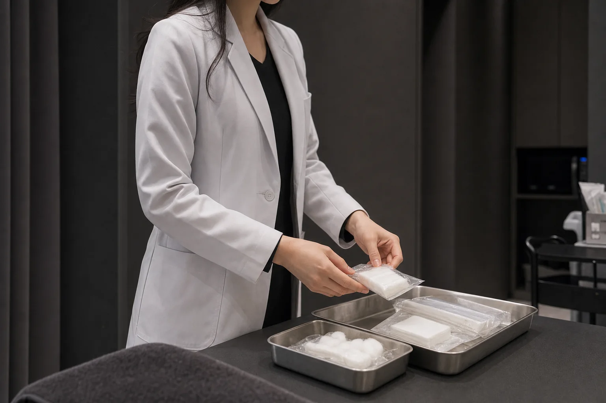

01 / FOCUS
인지 기능과 집중 저하
주의 지속의 어려움과 정신적 피로가 나타날 때
수면의 질, 긴장 상태와 생활 리듬을 함께 확인합니다.
- 관련 상태
- 수험생 · 직장인 · 집중력 저하 · 브레인포그 · 기억력 저하
- 진료에서 확인하는 것
- 수면의 질 · 피로 누적 · 긴장 상태 · 생활 리듬
CARE · CLINICAL ASSESSMENT
언제 시작됐는지, 어떻게 반복되는지,
어떤 증상이 함께 나타나는지 확인해 진료 방향을 판단합니다.
HISTORY ASSESS PLAN
CLINICAL MOMENTS
확인된 증상과 소견을 종합해
필요한 진료와 우선순위를 정합니다.


FIVE POINTS OF CARE
한 가지 증상에도 여러 문제가 함께 나타날 수 있습니다.
현재 가장 필요한 부분부터 확인합니다.

01 / FOCUS
주의 지속의 어려움과 정신적 피로가 나타날 때
수면의 질, 긴장 상태와 생활 리듬을 함께 확인합니다.
02 / CALM
불안과 과각성, 입면 또는 수면 유지의 어려움이 있을 때
스트레스 반응과 자율신경계 상태를 종합해 확인합니다.
03 / RESTORE
휴식 후에도 피로와 기력 저하가 지속될 때
현재 체력과 소화 상태, 회복 속도를 함께 평가합니다.
04 / RELIEF
통증과 두통, 소화 불편이 나타날 때
발생 양상과 악화 요인, 기능적 제한을 함께 평가합니다.
05 / SHAPE
체중 변화와 부종, 대사 저하가 나타날 때
식욕과 수면, 소화, 활동량과 생활 패턴을 확인합니다.
CLINICAL CONSULTATION
현재의 증상과 그동안의 경과를 바탕으로
무엇을 먼저 살펴야 할지 판단합니다.